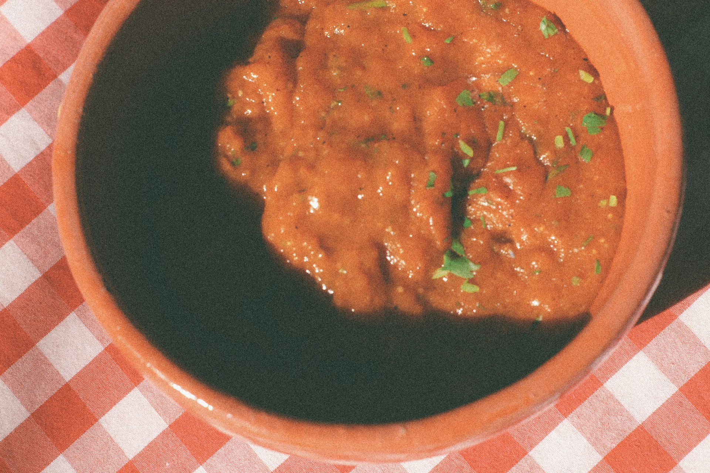

Beef Chilli Recipe

A spicy beef chilli
This is a hearty beef chilli, packed with flavor and just the right amount of heat.
Ingredients
- Beef mince
- Onion
- Garlic
- Chopped tomatoes
- Kidney beans
- Chilli powder
- Cumin
- Salt
- Pepper
Steps
- In a large pot, brown the beef mince over medium heat.
- Add the chopped onion and garlic, cooking until softened.
- Stir in the chopped tomatoes, kidney beans, and spices.
- Simmer for at least 30 minutes, allowing the flavors to meld.
Back to Home